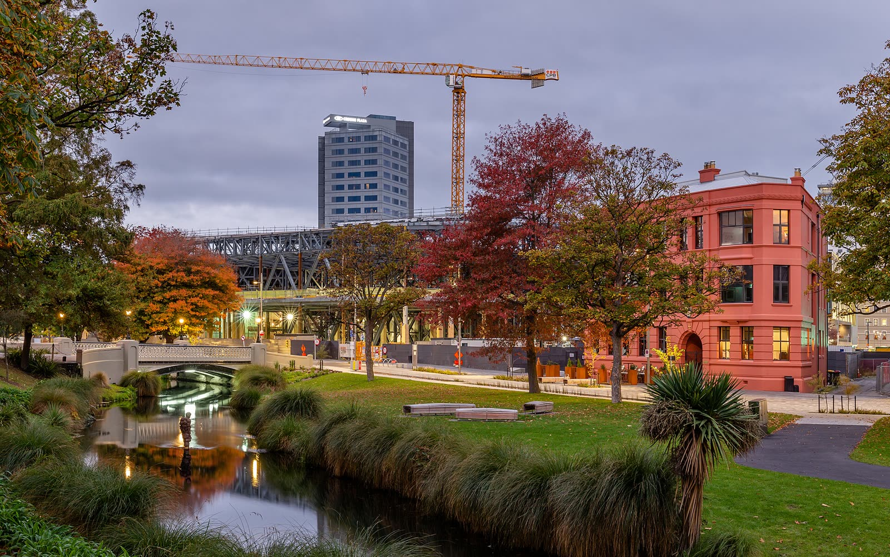
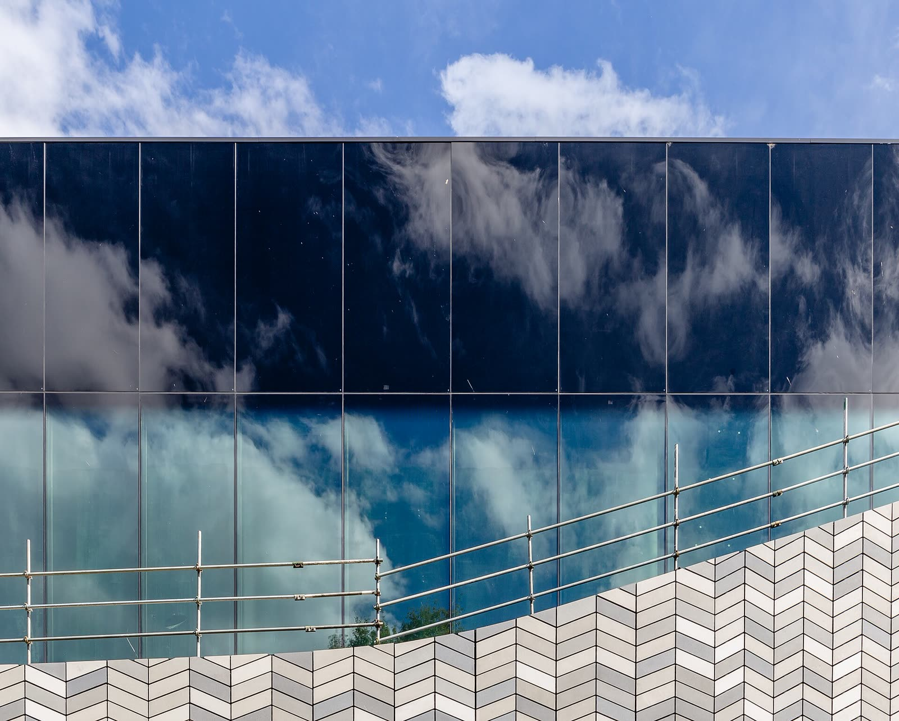

2020 – 2021
Hospitality · Distinction Hotel
Kitchen Hand, then Front Office Guest Service Associate — reliability when the pace is high.





Christchurch
Port Hills
Scroll to ride →
Origin
From Kerala to Canterbury — I built my working life in this city. The Square is where Christchurch gathers; my story gathers around the people I support.
City centre · rebuild · gathering place
Now
I manage a varied caseload, work with agencies and stakeholders, and keep records accurate and compliant. Decisions carefully against policy — with respect for Te Tiriti o Waitangi and culturally responsive practice.
I move case files through to resolution, run compliance checks, prepare Reviews of Decision, and embed Te Ao Māori principles in my casework.
People are not cases.

How I work
Hospitality taught me pace. Aged care taught me dignity. Community support taught me to stay with complexity. Public service asks me to hold all of that — and decide carefully.
Route
Over six years across hospitality, aged care, community support, and public service — much of it in Christchurch.
2020 – 2021
Kitchen Hand, then Front Office Guest Service Associate — reliability when the pace is high.

2021 – 2023
Caregiver & Coordinator — dignity, clinical coordination, records to aged care standards.
2023 – 2025
IDEA Services & Te Whare Ngakau Trust — person-centred plans, whānau, higher-complexity support.
Nov 2025 – Present
General Case Manager — caseload, policy, Te Tiriti-aligned practice.
Nov 2025 – Present
I manage a diverse caseload and coordinate with stakeholders and agencies to move case files through to resolution. I keep accurate, compliant records; run compliance checks; and prepare defensible files for Reviews of Decision. I schedule meetings across parties, review documents carefully, and work under pressure while adapting to changing priorities. I embed Te Ao Māori principles and mātauranga Māori in my casework, aligned with Te Tiriti o Waitangi obligations.
May 2024 – Nov 2025
I held a higher-complexity caseload with intensive client support needs. I assessed needs, developed person-centred support plans, and built trusted relationships with clients, whānau, clinical teams, and external providers. I kept confidential records to policy, and coached clients transitioning toward independence.
Apr 2023 – Oct 2025
I assessed client needs and developed person-centred plans, including referrals to specialist services. I maintained relationships with clients, whānau, clinical teams, and providers. I kept accurate confidential records under organisational policy and privacy legislation, and supported people moving toward greater independence.
2021 – 2023
I provided direct care and coordinated support for residents, with a focus on dignity and quality of life. I worked with clinical teams and external providers for seamless delivery, and maintained resident records to aged care regulatory standards.
Sep 2020 – Aug 2021
I managed high-volume guest enquiries and financial transactions. I processed payments, kept accurate guest records, resolved complaints, and delivered customer service in a fast-paced front-of-house environment.
Jun 2020 – Aug 2020
I supported kitchen operations, cleanliness, and efficiency standards — building reliability and work ethic in a hospitality setting.
Learn
Ahead
Today I am a Case Manager at MSD. Ahead of me is a deliberate progression toward work that centres employment pathways and lasting outcomes for the people I support — not a role I hold today.
Terminus
Based in Christchurch, New Zealand. Open to conversations about work, community, and connecting across cultures. Employers can send a private enquiry below — my email address is not listed on this site.